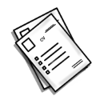

Brique Théo Copyright ©2022 Mon Compte linked-in :

Je m'appelle Théo, j'ai 19 ans et je suis actuellement en 2ème année en BTS SIO spécialité SLAM.
Avant de commencer mes études supérieures, j'ai fait un BAC technologique STI2D en spécialité SIN.
C'est à ce moment-là que j'ai découvert la programmation et étant passionné de jeu vidéo, j'ai décidé de continuer mes études dans ce domaine.
Après l'obtention de mon BTS, j'aimerai effectuer une licence professionnelle et ensuite me spécialiser dans le développement de jeu vidéo ou le développement web que j'apprécie également.
Lorsque j'aurais fini mes études, j'aimerai donc devenir développeur/programmeur gameplay ou développeur web.
Je suis quelqu'un de très motivé et j’aime travailler en équipe. Je m'investis donc pleinement à chacun des projets auxquels je participe.
Si vous voulez en savoir plus sur moi, voici un lien sur l'image ci-dessous pour télécharger mon CV et un autre également pour télécharger mon tableau de synthèse .

Brique Théo Copyright ©2022 Mon Compte linked-in :